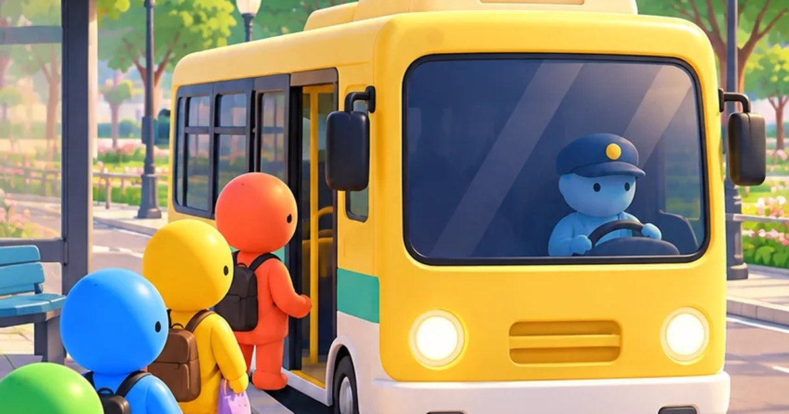
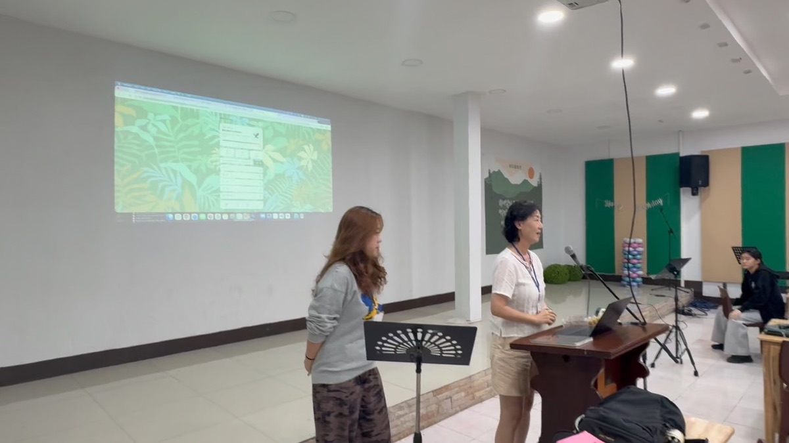
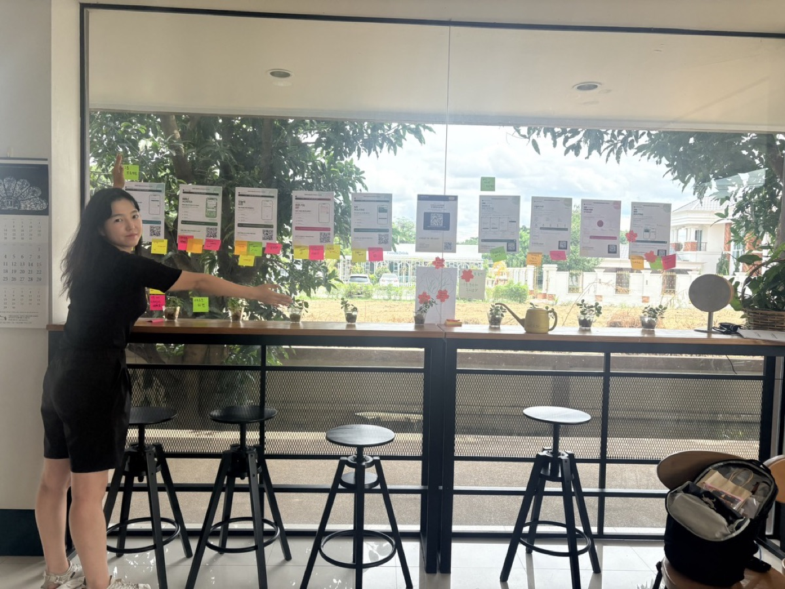
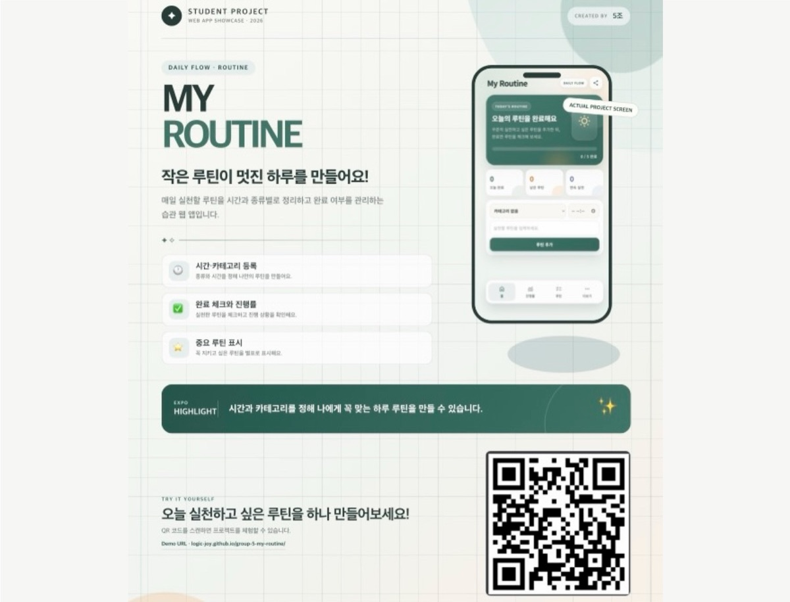
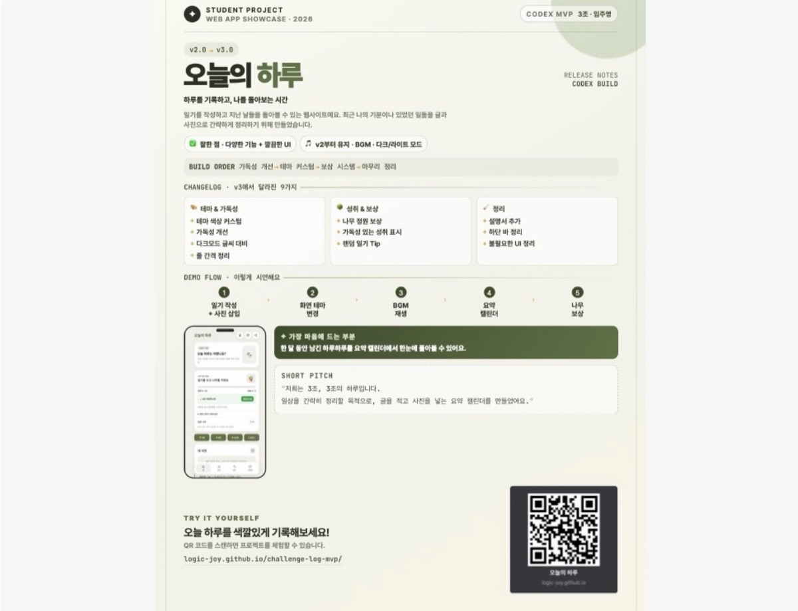
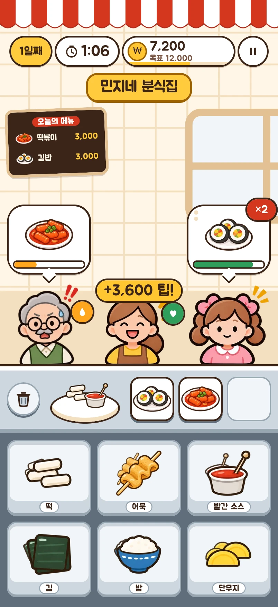
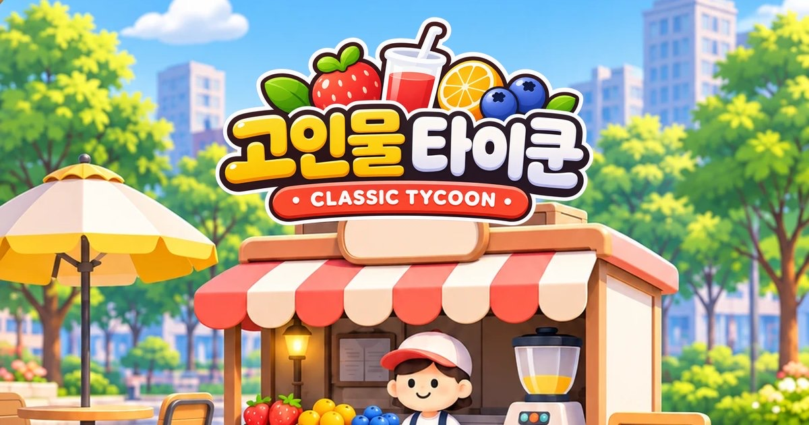

시작은 단순했습니다. 좋아하는 게임에는 광고가 자꾸 끼어들고, 옛날에 즐기던 추억의 게임은 다시 해 보고 싶었습니다. 그래서 직접 만들었습니다.
수업에서는 아이들이 게임을 하는 사람에서 만드는 사람이 되도록 이끕니다. 게임 속 규칙과 로직을 분석하고, 직접 개발하고, 오류를 고쳐 가며 내 게임이 점점 살아 움직이는 과정을 경험합니다. 두 게임의 개발 과정은 모두 기록해 게임 코딩 수업 자료로 정리하고 있습니다.
상세 이력
웹·앱 개발자 · AI 프로젝트 교육 강사
6년 이상의 웹·앱 서비스 개발 경험과 교원자격, 초등·청소년·성인 대상 교육 경험을 갖추고 있습니다. 퓨쳐스콜레에서 교육 분야의 구독형 소프트웨어 서비스(EdTech SaaS) '라이브클래스(LiveKlass)'를 5년간 개발·운영했으며, 학습자의 수준과 관심사에 맞춰 AI·코딩 수업을 설계하고 진행합니다.
학습자의 아이디어를 구체화하고,
실제 작동하는 결과물로 만드는 과정을 지도합니다.
TEACHING
중·고등학생과 성인 28명, 5개 조와 함께 ChatGPT·Codex 등 생성형 AI로 웹 프로젝트를 만들었습니다. 아이디어 정의 → 핵심 기능 설계 → V1.0 구현 → 오류 수정과 고도화를 거쳐 조별 웹앱 5개를 완성하고 Expo에서 전시·공유했습니다.





그 밖의 조별 결과물 · 카드 뽑기·퀴즈 웹앱(1조) · 캐릭터 성장형 기록 웹앱(2조) · 스탬프 목표 체크 웹앱(4조)
“짧은 시간에 무에서 유로, 시작부터 완성까지 맛볼 수 있어서 너무 재미있는 시간이었습니다.”
“해 보고 싶었던 무언가를 개발하는 첫걸음을 뗄 수 있었습니다. 꼭 다시 참여하고 싶습니다.”
“조끼리 만들었던 것을 저 혼자서 AI를 통해 수정하는 것이 가장 기억에 남았습니다.”
수업 후 서술형 후기 10건 모두 긍정 반응 · 그중 6건에서 심화 학습·재참여 의향현지 초등·중학생에게 영어로 코딩 기초를 가르쳤습니다. 샌드위치 명령 활동, 가상 로봇 활동, 팀별 문제 해결 같은 언플러그드 활동으로 알고리즘·디버깅 개념을 지도하고, 영어 교안과 활동 자료를 직접 만들었습니다.
초등 영재원 학생 3명을 2년간 맡아 개인·소그룹으로 프로젝트형 코딩 수업을 했습니다. 학생이 직접 결과물을 만들며 문제를 해결하도록 지도하고, 결과물 발표회를 운영했습니다.
중학생 10명의 방과후 수학 수업을 1학년부터 3학년까지 같은 학생들과 함께 올라가며 맡았습니다. 학생의 이해도와 흥미에 맞춰 설명 방식을 조정했습니다.
HOW I TEACH
작은 핵심 기능부터 완성하고, 직접 사용하며 개선하는 프로젝트형 교육. 핵심 기능을 갖춘 작은 결과물을 만들고 점진적으로 발전시킵니다. 실제 서비스를 만드는 방식 그대로입니다.
관심사와 해결할 문제를 정의하고 필요한 핵심 기능을 구체화합니다.
생성형 AI에 요구사항을 전달하고 핵심 기능을 갖춘 첫 결과물을 만듭니다.
직접 사용하며 오류와 불편을 찾고, 디버깅과 고도화를 반복합니다.
아이디어, 구현 과정, 개선한 점을 자신의 언어로 설명합니다.
AI와 함께, 하루 만에, 가족에게 보여 줄 수 있는 진짜 게임을 만듭니다. 우리 가족이 귀여운 캐릭터 손님으로 오는 「OO이네 분식집」을 내 아이디어와 디자인으로 바꾸고, 폰에서 바로 열리는 내 게임 링크를 가져갑니다.
“우와 진짜 게임이잖아?? 이걸 니가 만들었어?”

DEVELOPMENT
교육 사업자와 학습자가 쓰는 온라인 교육 서비스 '라이브클래스(LiveKlass)'를 5년간 만들고 운영했습니다. 클래스 운영, 결제, 라이브 방송, 콘텐츠 편집, 모바일 앱 기능을 만들고 실제 사용자 의견을 받아 꾸준히 고쳤습니다.
React 기반 웹 서비스와 React Native 모바일 앱을 개발하고, Node.js·PHP 백엔드 기능과 프론트엔드·백엔드 API 연동을 맡았습니다.
DIRECT PROJECTS


Claude Code Ultra로 개발 · 그림은 ChatGPT 이미지 생성
시작은 단순했습니다. 좋아하는 게임에는 광고가 자꾸 끼어들고, 옛날에 즐기던 추억의 게임은 다시 해 보고 싶었습니다. 그래서 직접 만들었습니다.
수업에서는 아이들이 게임을 하는 사람에서 만드는 사람이 되도록 이끕니다. 게임 속 규칙과 로직을 분석하고, 직접 개발하고, 오류를 고쳐 가며 내 게임이 점점 살아 움직이는 과정을 경험합니다. 두 게임의 개발 과정은 모두 기록해 게임 코딩 수업 자료로 정리하고 있습니다.